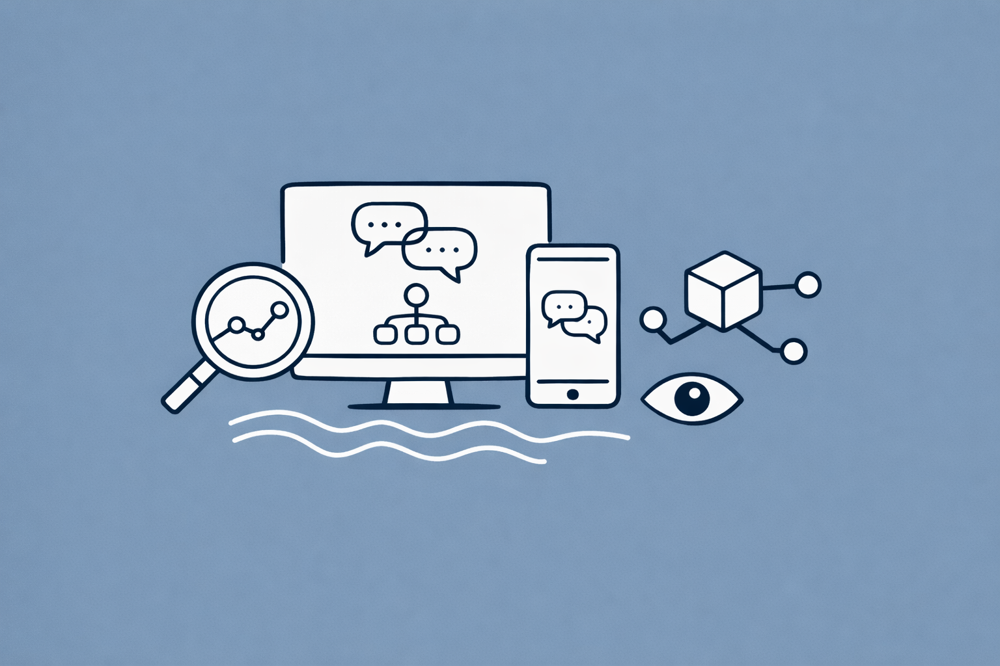

graph LR
A["User Message<br/>(Turn N)"] --> B["LangGraph Agent"]
B --> C["LLM Call"]
B --> D["Tool Call"]
B --> E["Retrieval"]
C --> F["Response"]
D --> F
E --> F
F --> G["LangSmith<br/>Trace + Thread"]
G --> H["Tokens & Cost"]
G --> I["Latency"]
G --> J["Errors"]
G --> K["Feedback"]
style A fill:#ffce67,stroke:#333
style B fill:#6cc3d5,stroke:#333,color:#fff
style G fill:#56cc9d,stroke:#333,color:#fff
style H fill:#f8f9fa,stroke:#333
style I fill:#f8f9fa,stroke:#333
style J fill:#e74c3c,stroke:#333,color:#fff
style K fill:#f8f9fa,stroke:#333
Observability for Multi-Turn LLM Conversations with LangSmith
End-to-end guide: trace, monitor, and debug multi-turn agentic conversations with LangChain, LangGraph, and LangSmith — covering threads, runs, tool use, token cost, latency, and error tracking
Keywords
LLM observability, LangSmith, LangChain, LangGraph, multi-turn conversation, tracing, threads, runs, tool use, token usage, cost tracking, latency, error monitoring, production monitoring, agentic workflows, online evaluation

Introduction
Building an LLM-powered chatbot or agent that handles a single request is straightforward. Making it observable in production — across multi-turn conversations, tool calls, retries, and thousands of concurrent users — is an entirely different challenge.
Observability is the ability to understand what your LLM application is doing at every step: what prompts were sent, what the model returned, which tools were invoked, how many tokens were consumed, how much it cost, how long each step took, and where errors occurred. Without it, debugging a failed conversation turn at 3 AM becomes guesswork.
The LangChain ecosystem provides a complete observability stack:
- LangChain — The framework for building LLM applications with chains, tools, and retrieval
- LangGraph — The agent orchestration framework for stateful, multi-step, multi-turn workflows
- LangSmith — The observability and evaluation platform for tracing, monitoring, and debugging
This article covers the full observability pipeline for multi-turn agentic conversations:
- Core concepts: projects, traces, runs, threads
- Instrumenting LangGraph agents with tracing
- Tracking tool use, tokens, cost, and latency
- Multi-turn conversation threading
- Error tracking and debugging
- Online evaluation and production monitoring
- Dashboards and alerting
For deploying and serving the LLM itself, see Deploying and Serving LLM with vLLM. For scaling to production traffic, see Scaling LLM Serving for Enterprise Production. For cost optimization strategies, see FinOps Best Practices for LLM Applications. For runtime safety layers, see Guardrails for LLM Applications with Giskard.
1. LangSmith Observability Concepts
Before instrumenting your application, you need to understand the four core primitives that LangSmith uses to organize observability data.
graph TD
P["Project<br/>(container for all traces)"] --> T1["Trace 1<br/>(Turn 1)"]
P --> T2["Trace 2<br/>(Turn 2)"]
P --> T3["Trace 3<br/>(Turn 3)"]
T1 --> R1["Run: Agent"]
R1 --> R2["Run: LLM Call"]
R1 --> R3["Run: Tool Call"]
R3 --> R4["Run: Search API"]
T1 -.->|"thread_id: conv-123"| TH["Thread<br/>(multi-turn conversation)"]
T2 -.->|"thread_id: conv-123"| TH
T3 -.->|"thread_id: conv-123"| TH
style P fill:#8e44ad,color:#fff,stroke:#333
style TH fill:#56cc9d,stroke:#333,color:#fff
style T1 fill:#3498db,color:#fff,stroke:#333
style T2 fill:#3498db,color:#fff,stroke:#333
style T3 fill:#3498db,color:#fff,stroke:#333
style R1 fill:#ecf0f1,color:#333,stroke:#bdc3c7
style R2 fill:#ecf0f1,color:#333,stroke:#bdc3c7
style R3 fill:#ecf0f1,color:#333,stroke:#bdc3c7
style R4 fill:#ecf0f1,color:#333,stroke:#bdc3c7
The Four Primitives
| Primitive | Description | Analogy |
|---|---|---|
| Run | A single unit of work — one LLM call, one tool invocation, one chain step | A span in OpenTelemetry |
| Trace | A collection of runs for a single request — from input to final output | A trace in OpenTelemetry |
| Thread | A sequence of traces representing a multi-turn conversation | A chat session |
| Project | A container for all traces from a single application or service | A service/microservice |
How They Map to a Chatbot
Consider a customer support chatbot where the user asks: “What’s my order status?” → the agent calls a tool → returns the answer → then the user follows up with “Can you cancel it?”
- Turn 1 (“What’s my order status?”) = Trace 1 containing:
- Run:
agent(top-level orchestration) - Run:
ChatOpenAI(LLM decides to call a tool) - Run:
lookup_order(tool execution) - Run:
ChatOpenAI(LLM generates the final answer)
- Run:
- Turn 2 (“Can you cancel it?”) = Trace 2 containing similar runs
- Both traces are linked by a shared
thread_id= Thread - All threads live in a single Project (e.g.,
customer-support-prod)
2. Setup and Installation
Install Dependencies
pip install langchain langchain-openai langgraph langsmithConfigure Environment
export LANGSMITH_TRACING=true
export LANGSMITH_API_KEY=<your-langsmith-api-key>
export LANGSMITH_PROJECT=my-agent-project
export OPENAI_API_KEY=<your-openai-api-key>| Variable | Purpose |
|---|---|
LANGSMITH_TRACING |
Enables/disables tracing globally |
LANGSMITH_API_KEY |
Your LangSmith API key |
LANGSMITH_PROJECT |
Default project name for all traces |
OPENAI_API_KEY |
Your LLM provider API key |
Verify Connection
from langsmith import Client
client = Client()
print(client.list_projects())3. Tracing a LangGraph Agent with Tool Use
This section builds a complete LangGraph agent with tools and shows how every step is automatically traced in LangSmith.
Define Tools
from langchain.tools import tool
@tool
def search_orders(customer_id: str) -> str:
"""Look up recent orders for a customer."""
# Simulated database lookup
orders = {
"cust-001": "Order #1234 — Shipped, arriving tomorrow",
"cust-002": "Order #5678 — Processing, expected in 3 days",
}
return orders.get(customer_id, "No orders found.")
@tool
def cancel_order(order_id: str) -> str:
"""Cancel a specific order."""
return f"Order {order_id} has been cancelled successfully."
@tool
def get_product_info(product_name: str) -> str:
"""Get information about a product."""
return f"{product_name}: $49.99, in stock, free shipping over $50."
tools = [search_orders, cancel_order, get_product_info]Build the LangGraph Agent
from typing import Literal
from langchain_openai import ChatOpenAI
from langchain.messages import HumanMessage
from langgraph.prebuilt import ToolNode
from langgraph.graph import StateGraph, MessagesState
# Initialize LLM with tools
model = ChatOpenAI(model="gpt-4.1-mini", temperature=0).bind_tools(tools)
tool_node = ToolNode(tools)
def should_continue(state: MessagesState) -> Literal["tools", "__end__"]:
"""Route to tools if the model wants to call one, otherwise end."""
last_message = state["messages"][-1]
if last_message.tool_calls:
return "tools"
return "__end__"
def call_model(state: MessagesState):
"""Invoke the LLM with the current message history."""
response = model.invoke(state["messages"])
return {"messages": [response]}
# Build the graph
workflow = StateGraph(MessagesState)
workflow.add_node("agent", call_model)
workflow.add_node("tools", tool_node)
workflow.add_edge("__start__", "agent")
workflow.add_conditional_edges("agent", should_continue)
workflow.add_edge("tools", "agent")
app = workflow.compile()Run with Tracing
With LANGSMITH_TRACING=true, every invocation is automatically traced:
result = app.invoke(
{"messages": [HumanMessage(content="What's the status of order for customer cust-001?")]},
)
print(result["messages"][-1].content)In LangSmith, you will see a trace tree like:
├── RunnableSequence (agent graph)
│ ├── agent (call_model)
│ │ └── ChatOpenAI (decides to call search_orders)
│ ├── tools (tool_node)
│ │ └── search_orders (executes tool)
│ └── agent (call_model)
│ └── ChatOpenAI (generates final answer)4. Multi-Turn Conversation Threading
The key to observability for multi-turn conversations is threads. A thread links multiple traces together so you can see an entire conversation — not just isolated requests.
Configuring Threads
To group traces into a thread, pass a thread_id (or session_id or conversation_id) in the metadata:
import uuid
THREAD_ID = str(uuid.uuid4())
# Turn 1
result = app.invoke(
{"messages": [HumanMessage(content="What's the status of order for customer cust-001?")]},
config={
"metadata": {"thread_id": THREAD_ID},
"configurable": {"thread_id": THREAD_ID},
},
)
print("Turn 1:", result["messages"][-1].content)
# Turn 2 — continues the same conversation
result = app.invoke(
{"messages": [
HumanMessage(content="What's the status of order for customer cust-001?"),
result["messages"][-1],
HumanMessage(content="Can you cancel order #1234?"),
]},
config={
"metadata": {"thread_id": THREAD_ID},
"configurable": {"thread_id": THREAD_ID},
},
)
print("Turn 2:", result["messages"][-1].content)
# Turn 3
result = app.invoke(
{"messages": [
*result["messages"],
HumanMessage(content="What do you have in the way of headphones?"),
]},
config={
"metadata": {"thread_id": THREAD_ID},
"configurable": {"thread_id": THREAD_ID},
},
)
print("Turn 3:", result["messages"][-1].content)What You See in LangSmith
In the Threads tab of your project, you will see:
- A thread with 3 traces, each representing one conversation turn
- A chatbot-like UI showing the conversation history
- Token counts, latency, and feedback aggregated per thread
- The ability to drill into any individual trace to see runs
graph TD
subgraph Thread["Thread: conv-abc123"]
T1["Trace 1: Turn 1<br/>What's the status of order...?<br/>🔧 search_orders → shipped"]
T2["Trace 2: Turn 2<br/>Can you cancel order #1234?<br/>🔧 cancel_order → cancelled"]
T3["Trace 3: Turn 3<br/>What do you have in headphones?<br/>🔧 get_product_info → $49.99"]
end
T1 --> T2 --> T3
style Thread fill:#f8f9fa,stroke:#333
style T1 fill:#3498db,color:#fff,stroke:#333
style T2 fill:#3498db,color:#fff,stroke:#333
style T3 fill:#3498db,color:#fff,stroke:#333
Thread Metadata Propagation
To ensure all child runs within a trace are included in thread-level filtering and token counting, propagate the thread_id metadata to child runs:
from langsmith import traceable
@traceable(name="Custom Processing Step")
def process_step(data: str, thread_id: str):
"""A custom processing step that also carries thread metadata."""
# The thread_id must propagate to child runs
return data.upper()
# When calling with langsmith_extra:
process_step(
"some data",
thread_id=THREAD_ID,
langsmith_extra={"metadata": {"thread_id": THREAD_ID}},
)Important: If child runs don’t have the
thread_idmetadata, they won’t be included when filtering runs by thread, calculating token usage for a thread, or aggregating costs across a thread.
5. Tracking Token Usage and Cost
LangSmith automatically captures token usage for supported LLM providers (OpenAI, Anthropic, etc.). This enables cost tracking at multiple levels.
What Is Captured Automatically
| Metric | Description | Level |
|---|---|---|
| Input tokens | Tokens in the prompt (system + user + history) | Per LLM run |
| Output tokens | Tokens generated by the model | Per LLM run |
| Total tokens | Input + output tokens | Per LLM run |
| Latency | Wall-clock time for each run | Per run |
| Time to first token | Time until streaming begins | Per LLM run |
| Token throughput | Tokens per second | Per LLM run |
| Cost | Estimated cost based on model pricing | Per LLM run |
Viewing Token Usage in Traces
When you click on an LLM run in LangSmith, you see:
- Input: The full prompt with all messages
- Output: The model’s response (including tool calls)
- Token Usage: Input tokens, output tokens, total tokens
- Latency: Total time, time to first token
- Model: Which model was used
- Cost: Estimated cost for the call
Aggregating Cost Across Conversations
Use the LangSmith SDK to query token usage and cost programmatically:
from langsmith import Client
client = Client()
# Get all runs for a specific thread
runs = list(client.list_runs(
project_name="my-agent-project",
filter='has(metadata, \'{"thread_id": "your-thread-id"}\')',
))
# Aggregate token usage
total_input_tokens = 0
total_output_tokens = 0
total_cost = 0.0
for run in runs:
if run.run_type == "llm" and run.total_tokens:
total_input_tokens += run.prompt_tokens or 0
total_output_tokens += run.completion_tokens or 0
total_cost += run.total_cost or 0.0
print(f"Thread token usage:")
print(f" Input tokens: {total_input_tokens:,}")
print(f" Output tokens: {total_output_tokens:,}")
print(f" Total cost: ${total_cost:.4f}")Cost Per Conversation Turn
Understanding cost distribution across turns is critical for optimization:
graph LR
subgraph CostBreakdown["Cost Breakdown per Turn"]
T1["Turn 1<br/>500 input tok<br/>120 output tok<br/>$0.0032"]
T2["Turn 2<br/>1,200 input tok<br/>85 output tok<br/>$0.0061"]
T3["Turn 3<br/>2,100 input tok<br/>200 output tok<br/>$0.0115"]
end
T1 --> T2 --> T3
Note["Cost grows with<br/>conversation history!"]
style T1 fill:#27ae60,color:#fff,stroke:#333
style T2 fill:#f39c12,color:#fff,stroke:#333
style T3 fill:#e74c3c,color:#fff,stroke:#333
style Note fill:#ecf0f1,color:#333,stroke:#bdc3c7
Key insight: In multi-turn conversations, input token cost grows with each turn because the full conversation history is included in every request. This is why techniques like conversation summarization and sliding window memory are critical — see FinOps Best Practices for LLM Applications for optimization strategies.
6. Latency Tracking and Optimization
Latency Breakdown per Run
LangSmith provides latency data for every run, enabling you to identify bottlenecks:
| Run Type | Typical Latency | What Affects It |
|---|---|---|
| LLM call | 500ms–5s | Model size, token count, provider load |
| Tool call (API) | 50ms–2s | External API latency |
| Tool call (DB) | 10ms–500ms | Query complexity, database load |
| Retrieval (vector search) | 20ms–200ms | Index size, embedding model |
| Output parsing | 1ms–50ms | Response complexity |
Identifying Slow Steps
Use the LangSmith SDK to find runs that exceed latency thresholds:
from langsmith import Client
from datetime import datetime, timedelta
client = Client()
# Find slow LLM calls in the last 24 hours
slow_runs = list(client.list_runs(
project_name="my-agent-project",
run_type="llm",
filter='gt(latency, "5s")',
start_time=datetime.now() - timedelta(hours=24),
))
for run in slow_runs:
print(f"Run: {run.name}")
print(f" Latency: {run.latency}s")
print(f" Tokens: {run.total_tokens}")
print(f" Error: {run.error}")
print("---")Adding Custom Latency Annotations
For custom steps not automatically tracked, use the @traceable decorator:
import time
from langsmith import traceable
@traceable(run_type="tool", name="Vector Search")
def search_knowledge_base(query: str) -> list[str]:
"""Search the knowledge base — latency is automatically tracked."""
start = time.time()
# ... your vector search logic ...
results = ["doc1", "doc2", "doc3"]
return results7. Error Tracking and Debugging
Automatic Error Capture
LangSmith automatically captures errors at every level:
- LLM errors: Rate limits (
429), context length exceeded, API timeouts - Tool errors: Failed API calls, validation errors, permission issues
- Graph errors: Invalid state transitions, infinite loops, timeout
- Parsing errors: Malformed tool calls, JSON decode failures
graph TD
E["Error in Run"] --> C1{"Error Type"}
C1 -->|"429 Rate Limit"| A1["LLM Provider<br/>Throttling"]
C1 -->|"Context Length"| A2["Token Limit<br/>Exceeded"]
C1 -->|"Tool Failure"| A3["External API<br/>Down"]
C1 -->|"Parse Error"| A4["Malformed LLM<br/>Output"]
C1 -->|"Timeout"| A5["Agent Loop<br/>Too Long"]
A1 --> F1["Retry with backoff"]
A2 --> F2["Truncate history"]
A3 --> F3["Return fallback"]
A4 --> F4["Re-prompt model"]
A5 --> F5["Set max iterations"]
style E fill:#e74c3c,color:#fff,stroke:#333
style A1 fill:#ecf0f1,color:#333,stroke:#bdc3c7
style A2 fill:#ecf0f1,color:#333,stroke:#bdc3c7
style A3 fill:#ecf0f1,color:#333,stroke:#bdc3c7
style A4 fill:#ecf0f1,color:#333,stroke:#bdc3c7
style A5 fill:#ecf0f1,color:#333,stroke:#bdc3c7
style F1 fill:#27ae60,color:#fff,stroke:#333
style F2 fill:#27ae60,color:#fff,stroke:#333
style F3 fill:#27ae60,color:#fff,stroke:#333
style F4 fill:#27ae60,color:#fff,stroke:#333
style F5 fill:#27ae60,color:#fff,stroke:#333
Filtering Error Traces
from langsmith import Client
client = Client()
# Find all errored runs in the last hour
error_runs = list(client.list_runs(
project_name="my-agent-project",
is_error=True,
start_time=datetime.now() - timedelta(hours=1),
))
for run in error_runs:
print(f"Run: {run.name} ({run.run_type})")
print(f" Error: {run.error}")
print(f" Trace ID: {run.trace_id}")
print(f" Thread: {run.metadata.get('thread_id', 'N/A')}")
print("---")Debugging a Failed Conversation Turn
When a user reports an issue, you can trace back through the full conversation:
# Find the thread for a specific user
thread_runs = list(client.list_runs(
project_name="my-agent-project",
filter='has(metadata, \'{"thread_id": "user-reported-thread-id"}\')',
))
# Print the full conversation flow
for run in sorted(thread_runs, key=lambda r: r.start_time):
status = "ERROR" if run.error else "OK"
print(f"[{status}] {run.start_time} | {run.run_type}: {run.name}")
if run.error:
print(f" Error: {run.error}")
if run.run_type == "llm":
print(f" Tokens: {run.total_tokens} | Latency: {run.latency}s")8. Custom Instrumentation with @traceable
For non-LangChain code (custom tools, business logic, external APIs), use the @traceable decorator to include them in your traces.
Tracing Custom Functions
from langsmith import traceable
@traceable(run_type="chain", name="Order Pipeline")
def process_order_request(user_message: str, customer_id: str):
"""Top-level pipeline — creates a trace."""
context = retrieve_customer_context(customer_id)
response = generate_response(user_message, context)
return response
@traceable(run_type="retriever", name="Customer Context Retrieval")
def retrieve_customer_context(customer_id: str) -> dict:
"""Retrieval step — creates a child run."""
return {
"customer_id": customer_id,
"plan": "premium",
"recent_orders": ["#1234", "#5678"],
}
@traceable(run_type="llm", name="Response Generation")
def generate_response(message: str, context: dict) -> str:
"""LLM call — creates a child run with token tracking."""
from openai import Client
client = Client()
response = client.chat.completions.create(
model="gpt-4.1-mini",
messages=[
{"role": "system", "content": f"Customer context: {context}"},
{"role": "user", "content": message},
],
)
return response.choices[0].message.contentRun Types
| Run Type | When to Use | LangSmith Rendering |
|---|---|---|
chain |
General orchestration, pipelines | Default view |
llm |
LLM calls (enables token counting) | Shows token usage, latency, model info |
tool |
Tool/function invocations | Shows tool name, input/output |
retriever |
Vector search, document retrieval | Shows retrieved documents |
prompt |
Prompt formatting steps | Shows template variables |
embedding |
Embedding generation | Shows embedding dimensions |
9. Wrapping OpenAI for Automatic Tracing
If you use the OpenAI SDK directly (outside LangChain), wrap it for automatic tracing:
import openai
from langsmith.wrappers import wrap_openai
# Wrap the OpenAI client — all calls are now traced
client = wrap_openai(openai.Client())
# This call is automatically traced with token usage, latency, cost
response = client.chat.completions.create(
model="gpt-4.1-mini",
messages=[
{"role": "system", "content": "You are a helpful assistant."},
{"role": "user", "content": "What is observability?"},
],
# Attach metadata for filtering
langsmith_extra={
"project_name": "my-agent-project",
"metadata": {"thread_id": "conv-123", "user_id": "user-456"},
"tags": ["production"],
},
)
print(response.choices[0].message.content)10. Online Evaluation for Production Quality
Online evaluations run automatically on production traces to monitor quality in real time.
LLM-as-a-Judge Evaluators
Set up evaluators in the LangSmith UI that score every trace (or a sample) against criteria:
| Evaluator | What It Measures | Use Case |
|---|---|---|
| Correctness | Is the answer factually correct? | RAG applications |
| Helpfulness | Did the response address the user’s need? | Customer support |
| Relevance | Is the response on-topic? | Domain-specific assistants |
| Safety | Does the response violate safety policies? | Public-facing chatbots |
| Coherence | Is the response logically consistent? | Multi-turn conversations |
Setting Up Online Evaluators
- Navigate to your project in the LangSmith UI
- Click + New → New Evaluator
- Configure the evaluator (e.g., LLM-as-a-judge correctness)
- Apply filters (e.g., only evaluate traces with negative user feedback)
- Set a sampling rate (e.g., 10% of traces to control cost)
Multi-Turn Conversation Evaluation
For multi-turn conversations, LangSmith supports thread-level evaluators that assess the entire conversation, not just individual turns:
- Resolution rate: Did the agent resolve the user’s issue?
- Conversation coherence: Was the conversation logically consistent across turns?
- Escalation detection: Did the conversation require human handoff?
Programmatic Feedback
Attach feedback from your application (e.g., thumbs up/down from users):
from langsmith import Client
client = Client()
# Attach user feedback to a specific run
client.create_feedback(
run_id="<run-id>",
key="user-rating",
score=1.0, # 1.0 = positive, 0.0 = negative
comment="The response was helpful!",
)11. Production Monitoring Dashboard
LangSmith provides dashboards for monitoring your LLM application at scale.
Key Metrics to Monitor
graph TD
D["Production Dashboard"] --> M1["Trace Volume<br/>Requests/min"]
D --> M2["Error Rate<br/>% failed traces"]
D --> M3["P50 / P99 Latency<br/>Response time"]
D --> M4["Token Usage<br/>Input + Output"]
D --> M5["Cost<br/>$ per hour/day"]
D --> M6["Feedback Scores<br/>User satisfaction"]
style D fill:#8e44ad,color:#fff,stroke:#333
style M1 fill:#3498db,color:#fff,stroke:#333
style M2 fill:#e74c3c,color:#fff,stroke:#333
style M3 fill:#f39c12,color:#fff,stroke:#333
style M4 fill:#27ae60,color:#fff,stroke:#333
style M5 fill:#e67e22,color:#fff,stroke:#333
style M6 fill:#56cc9d,color:#fff,stroke:#333
| Metric | What to Watch | Alert Threshold |
|---|---|---|
| Trace volume | Requests per minute | Sudden drops (outage) or spikes (abuse) |
| Error rate | % of traces with errors | > 5% |
| P99 latency | 99th percentile response time | > 10s for chat, > 30s for complex agents |
| Token usage | Total tokens consumed per hour | Budget-dependent |
| Cost | Estimated spend per day | Budget-dependent |
| Feedback scores | Average user satisfaction | < 0.7 (on 0–1 scale) |
| Tool failure rate | % of tool calls that error | > 1% |
Automations and Alerts
LangSmith supports automation rules that trigger actions based on trace properties:
- Auto-tag traces that match certain patterns
- Send webhooks when error rates spike
- Route to annotation queues for human review
- Auto-upgrade data retention for important traces
12. Complete Example: Observable Multi-Turn Agent
Putting it all together — a production-ready, fully observable LangGraph agent:
import os
import uuid
from typing import Literal
from langchain.messages import HumanMessage
from langchain.tools import tool
from langchain_openai import ChatOpenAI
from langgraph.graph import StateGraph, MessagesState
from langgraph.prebuilt import ToolNode
# ── Environment ─────────────────────────────
os.environ["LANGSMITH_TRACING"] = "true"
os.environ["LANGSMITH_PROJECT"] = "support-agent-prod"
# ── Tools ───────────────────────────────────
@tool
def search_orders(customer_id: str) -> str:
"""Look up recent orders for a customer."""
orders = {
"cust-001": "Order #1234 — Shipped, arriving tomorrow",
"cust-002": "Order #5678 — Processing, expected in 3 days",
}
return orders.get(customer_id, "No orders found.")
@tool
def cancel_order(order_id: str) -> str:
"""Cancel a specific order by ID."""
return f"Order {order_id} has been cancelled successfully."
tools = [search_orders, cancel_order]
# ── Agent Graph ─────────────────────────────
model = ChatOpenAI(model="gpt-4.1-mini", temperature=0).bind_tools(tools)
tool_node = ToolNode(tools)
def should_continue(state: MessagesState) -> Literal["tools", "__end__"]:
last_message = state["messages"][-1]
if last_message.tool_calls:
return "tools"
return "__end__"
def call_model(state: MessagesState):
response = model.invoke(state["messages"])
return {"messages": [response]}
workflow = StateGraph(MessagesState)
workflow.add_node("agent", call_model)
workflow.add_node("tools", tool_node)
workflow.add_edge("__start__", "agent")
workflow.add_conditional_edges("agent", should_continue)
workflow.add_edge("tools", "agent")
app = workflow.compile()
# ── Multi-Turn Conversation ─────────────────
def run_conversation():
thread_id = str(uuid.uuid4())
config = {
"metadata": {"thread_id": thread_id, "customer_id": "cust-001"},
"tags": ["production", "customer-support"],
}
messages = []
# Turn 1
messages.append(HumanMessage(content="What's the status of my order? My customer ID is cust-001."))
result = app.invoke({"messages": messages}, config=config)
messages = result["messages"]
print(f"Turn 1: {messages[-1].content}")
# Turn 2
messages.append(HumanMessage(content="Please cancel order #1234."))
result = app.invoke({"messages": messages}, config=config)
messages = result["messages"]
print(f"Turn 2: {messages[-1].content}")
# Turn 3
messages.append(HumanMessage(content="Thanks! That's all I needed."))
result = app.invoke({"messages": messages}, config=config)
messages = result["messages"]
print(f"Turn 3: {messages[-1].content}")
print(f"\nThread ID: {thread_id}")
print("View in LangSmith: https://smith.langchain.com → Threads tab")
run_conversation()13. Observability Checklist for Production
Before deploying your LLM application to production, ensure every item is covered:
| Category | Item | How |
|---|---|---|
| Tracing | All LLM calls traced | LANGSMITH_TRACING=true |
| Tracing | Custom tools traced | @traceable(run_type="tool") |
| Tracing | External APIs traced | @traceable or wrap_openai |
| Threading | Multi-turn conversations linked | metadata={"thread_id": ...} on all runs |
| Metadata | Environment tagged | metadata={"env": "prod"} |
| Metadata | App version tagged | metadata={"version": "2.1.0"} |
| Cost | Token usage tracked | Automatic with LangChain/OpenAI |
| Cost | Budget alerts configured | LangSmith dashboard |
| Latency | P99 latency monitored | LangSmith dashboard |
| Errors | Error rate monitored | LangSmith dashboard |
| Quality | Online evaluators configured | LLM-as-a-judge in LangSmith UI |
| Feedback | User feedback attached | client.create_feedback() |
| Retention | Data retention policy set | LangSmith project settings |
LangSmith vs Other Observability Tools
| Feature | LangSmith | Phoenix (Arize) | Langfuse | Helicone |
|---|---|---|---|---|
| LangChain/LangGraph integration | Native | Plugin | Plugin | Proxy |
| Multi-turn threading | Yes | Limited | Yes | No |
| Token/cost tracking | Automatic | Manual | Automatic | Automatic |
| Online evaluation | LLM-as-a-judge | Yes | Yes | No |
| Self-hosted option | Yes | Yes | Yes | Yes |
| Annotation queues | Yes | No | Yes | No |
| Dataset management | Yes | No | Yes | No |
| Deployment (Agent Server) | Yes | No | No | No |
| Best for | LangChain ecosystem | General ML | Open-source focus | API proxy |
Conclusion
Observability is not optional for production LLM applications — it is the difference between shipping a chatbot that works and one you can debug, optimize, and trust.
The LangChain + LangGraph + LangSmith stack provides:
- Automatic tracing of every LLM call, tool invocation, and retrieval step
- Multi-turn threading to follow entire conversations across turns
- Token and cost tracking at the run, trace, and thread level
- Latency monitoring to identify bottlenecks before users notice
- Error tracking with full context for rapid debugging
- Online evaluation for continuous quality monitoring
- Production dashboards for real-time operational visibility
The observability patterns in this article apply whether you’re running a simple chatbot or a complex multi-agent system with dozens of tools and retrieval sources.
Read More
- Add guardrails to your agent — see Guardrails for LLM Applications with Giskard
- Optimize token cost across conversations — see FinOps Best Practices for LLM Applications
- Scale your serving infrastructure — see Scaling LLM Serving for Enterprise Production
- Master prompt and context design — see Prompt Engineering vs Context Engineering
- Deploy your model with vLLM — see Deploying and Serving LLM with vLLM
- Set up offline evaluation with LangSmith datasets and evaluators
- Explore LangSmith Polly for AI-powered trace analysis